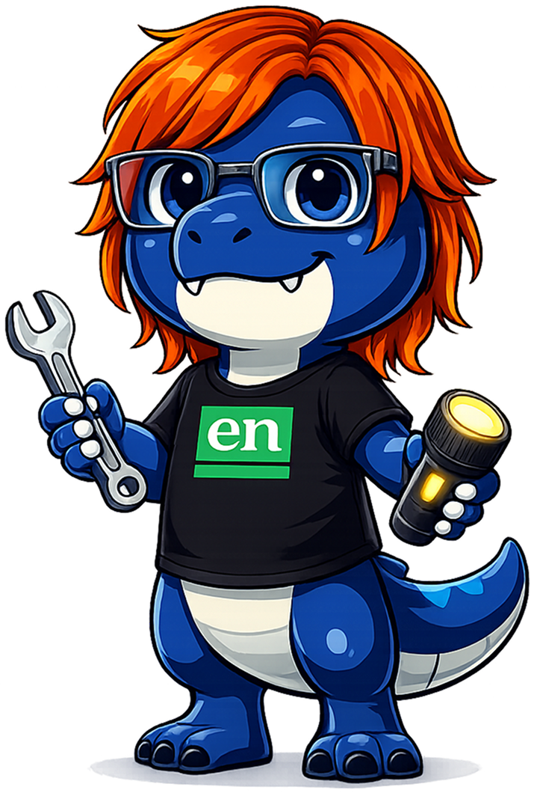
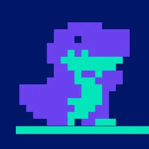
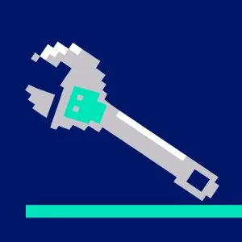

Rule your code
in the Age of AI.
n-dx connects codebase analysis, structured planning, and autonomous task execution into one repeatable loop — CLI-first, with a web dashboard when you need it. The PRD is the source of truth — every cycle begins with understanding what's in the code and ends with shipped work.

Static analysis engine that maps your codebase into a machine-readable context. File inventory, import graph, architectural zone detection via Louvain community detection, and React component catalog.
- File inventory with roles & metadata
- Import dependency graph
- Louvain community detection for zones
- AI-readable
CONTEXT.mdoutput

PRD management with hierarchical epics, features, tasks, and subtasks. Scan your project to generate proposals, track progress, and validate dependencies.
- Hierarchical task tree (epic → subtask)
- AI-driven proposal generation
- Dependency tracking & validation
- MCP server for Claude integration

Autonomous agent that picks the next task, builds a brief, and drives Claude in a tool-use loop. Records runs with full transcripts.
- Autonomous task execution
- Tool-use loop with Claude Code
- Run history & transcripts
- Configurable model & turn limits
AI coding tools
don't think in projects.
Most AI development tools operate at the file or prompt level. They generate code but don't track what was built, why it was built, or what comes next. The result: fast output, slow progress, and codebases that accumulate debt faster than teams can address it.
n-dx operates at the project level. A living PRD drives every cycle, so work is structured, traceable, and repeatable — regardless of which model or provider is doing the execution.

A self-cleaning loop from
analysis to execution to visualization.
Run the loop once to get started. Run it again to stay current. The PRD reflects the codebase at every step — no manual tracking required.
sourcevision scans your codebase — files, imports, zones, components — and produces a machine-readable context that all downstream tools consume. Run any time the codebase changes.
rex reads the analysis and generates a structured PRD. Review proposals, accept them, and maintain a live task tree with epics, features, dependencies, and acceptance criteria — updated each cycle.
hench picks the next task, builds a brief with full codebase context, and ships it — writing code, running tests, committing results. Mark complete. Pick the next. Repeat.
Run ndx start to launch the web dashboard — interactive zone maps, a live task tree with completion stats, and auto-refresh as data changes. Share it with your team or export a static build.
Where n-dx fits in
the development workflow.
Built for teams working on real codebases — not greenfield prototypes. Each scenario below represents a common inflection point where structured tooling returns measurable value.
![onboarding](data:image/svg+xml,%3Csvg%20xmlns%3D%22http%3A//www.w3.org/2000/svg%22%20width%3D%2248%22%20height%3D%2248%22%20viewBox%3D%220%200%2048%2048%22%20fill%3D%22none%22%3E%0A%20%20%3Ccircle%20cx%3D%2224%22%20cy%3D%228%22%20r%3D%225%22%20fill%3D%22%2300ffb3%22%20opacity%3D%220.9%22/%3E%0A%20%20%3Ccircle%20cx%3D%228%22%20cy%3D%2236%22%20r%3D%225%22%20fill%3D%22%2300ffb3%22%20opacity%3D%220.7%22/%3E%0A%20%20%3Ccircle%20cx%3D%2240%22%20cy%3D%2236%22%20r%3D%225%22%20fill%3D%22%2300ffb3%22%20opacity%3D%220.7%22/%3E%0A%20%20%3Ccircle%20cx%3D%2224%22%20cy%3D%2228%22%20r%3D%224%22%20fill%3D%22%2300ffb3%22%20opacity%3D%220.5%22/%3E%0A%20%20%3Cline%20x1%3D%2224%22%20y1%3D%2213%22%20x2%3D%2224%22%20y2%3D%2224%22%20stroke%3D%22%2300ffb3%22%20stroke-width%3D%221.5%22%20opacity%3D%220.5%22/%3E%0A%20%20%3Cline%20x1%3D%2224%22%20y1%3D%2213%22%20x2%3D%2210%22%20y2%3D%2231%22%20stroke%3D%22%2300ffb3%22%20stroke-width%3D%221.5%22%20opacity%3D%220.4%22/%3E%0A%20%20%3Cline%20x1%3D%2224%22%20y1%3D%2213%22%20x2%3D%2238%22%20y2%3D%2231%22%20stroke%3D%22%2300ffb3%22%20stroke-width%3D%221.5%22%20opacity%3D%220.4%22/%3E%0A%20%20%3Cline%20x1%3D%2224%22%20y1%3D%2232%22%20x2%3D%2211%22%20y2%3D%2234%22%20stroke%3D%22%2300ffb3%22%20stroke-width%3D%221%22%20opacity%3D%220.3%22/%3E%0A%20%20%3Cline%20x1%3D%2224%22%20y1%3D%2232%22%20x2%3D%2237%22%20y2%3D%2234%22%20stroke%3D%22%2300ffb3%22%20stroke-width%3D%221%22%20opacity%3D%220.3%22/%3E%0A%3C/svg%3E)
![cleanup](data:image/svg+xml,%3Csvg%20xmlns%3D%22http%3A//www.w3.org/2000/svg%22%20width%3D%2248%22%20height%3D%2248%22%20viewBox%3D%220%200%2048%2048%22%20fill%3D%22none%22%3E%0A%20%20%3Crect%20x%3D%2220%22%20y%3D%226%22%20width%3D%224%22%20height%3D%2222%22%20rx%3D%222%22%20fill%3D%22%23a78bff%22/%3E%0A%20%20%3Cpath%20d%3D%22M12%2028%20L36%2028%20L32%2042%20L16%2042%20Z%22%20fill%3D%22%23a78bff%22%20opacity%3D%220.8%22/%3E%0A%20%20%3Cline%20x1%3D%2218%22%20y1%3D%2228%22%20x2%3D%2217%22%20y2%3D%2242%22%20stroke%3D%22%237755cc%22%20stroke-width%3D%221%22/%3E%0A%20%20%3Cline%20x1%3D%2224%22%20y1%3D%2228%22%20x2%3D%2224%22%20y2%3D%2242%22%20stroke%3D%22%237755cc%22%20stroke-width%3D%221%22/%3E%0A%20%20%3Cline%20x1%3D%2230%22%20y1%3D%2228%22%20x2%3D%2231%22%20y2%3D%2242%22%20stroke%3D%22%237755cc%22%20stroke-width%3D%221%22/%3E%0A%20%20%3Ccircle%20cx%3D%2236%22%20cy%3D%2210%22%20r%3D%222%22%20fill%3D%22%23ffaa33%22/%3E%0A%20%20%3Ccircle%20cx%3D%2240%22%20cy%3D%2218%22%20r%3D%221.5%22%20fill%3D%22%23ffaa33%22%20opacity%3D%220.7%22/%3E%0A%20%20%3Ccircle%20cx%3D%2233%22%20cy%3D%2217%22%20r%3D%221%22%20fill%3D%22%23ffaa33%22%20opacity%3D%220.6%22/%3E%0A%20%20%3Cline%20x1%3D%2234%22%20y1%3D%228%22%20x2%3D%2238%22%20y2%3D%2212%22%20stroke%3D%22%23ffaa33%22%20stroke-width%3D%221%22%20opacity%3D%220.5%22/%3E%0A%3C/svg%3E)
![spec-driven](data:image/svg+xml,%3Csvg%20xmlns%3D%22http%3A//www.w3.org/2000/svg%22%20width%3D%2248%22%20height%3D%2248%22%20viewBox%3D%220%200%2048%2048%22%20fill%3D%22none%22%3E%0A%20%20%3Crect%20x%3D%2214%22%20y%3D%224%22%20width%3D%2220%22%20height%3D%2214%22%20rx%3D%223%22%20fill%3D%22%23ffaa33%22%20opacity%3D%220.9%22/%3E%0A%20%20%3Cline%20x1%3D%2218%22%20y1%3D%229%22%20x2%3D%2230%22%20y2%3D%229%22%20stroke%3D%22%23020c28%22%20stroke-width%3D%221.5%22/%3E%0A%20%20%3Cline%20x1%3D%2218%22%20y1%3D%2213%22%20x2%3D%2227%22%20y2%3D%2213%22%20stroke%3D%22%23020c28%22%20stroke-width%3D%221.5%22/%3E%0A%20%20%3Cline%20x1%3D%2224%22%20y1%3D%2218%22%20x2%3D%2224%22%20y2%3D%2226%22%20stroke%3D%22%23ffaa33%22%20stroke-width%3D%221.5%22/%3E%0A%20%20%3Cline%20x1%3D%2214%22%20y1%3D%2226%22%20x2%3D%2234%22%20y2%3D%2226%22%20stroke%3D%22%23ffaa33%22%20stroke-width%3D%221.5%22/%3E%0A%20%20%3Crect%20x%3D%226%22%20y%3D%2228%22%20width%3D%2214%22%20height%3D%2212%22%20rx%3D%222%22%20fill%3D%22%23ffaa33%22%20opacity%3D%220.6%22/%3E%0A%20%20%3Crect%20x%3D%2228%22%20y%3D%2228%22%20width%3D%2214%22%20height%3D%2212%22%20rx%3D%222%22%20fill%3D%22%23ffaa33%22%20opacity%3D%220.6%22/%3E%0A%20%20%3Cline%20x1%3D%229%22%20y1%3D%2232%22%20x2%3D%2217%22%20y2%3D%2232%22%20stroke%3D%22%23020c28%22%20stroke-width%3D%221.2%22/%3E%0A%20%20%3Cline%20x1%3D%229%22%20y1%3D%2235%22%20x2%3D%2215%22%20y2%3D%2235%22%20stroke%3D%22%23020c28%22%20stroke-width%3D%221.2%22/%3E%0A%20%20%3Cline%20x1%3D%2231%22%20y1%3D%2232%22%20x2%3D%2239%22%20y2%3D%2232%22%20stroke%3D%22%23020c28%22%20stroke-width%3D%221.2%22/%3E%0A%20%20%3Cline%20x1%3D%2231%22%20y1%3D%2235%22%20x2%3D%2237%22%20y2%3D%2235%22%20stroke%3D%22%23020c28%22%20stroke-width%3D%221.2%22/%3E%0A%3C/svg%3E)

Run it. Ship it.
Let the spec keep score.
n-dx is CLI-first — point it at a directory, run two commands, and the loop starts. When you want to see the big picture, ndx start launches a web dashboard with interactive zone maps, a live task tree, and auto-refresh as data changes.
-
✓
ndx analyze . && ndx recommend --accept . && ndx work --auto .— the full workflow in three commands -
✓Already use Claude Code or Codex? n-dx layers on top — log in on first run and you're set
-
✓Every run is logged with full transcripts, token usage, and file diffs
-
✓PRD state in
.rex/prd.json— version controlled, diff-able, readable -
✓Natural language task input:
ndx add "user auth with OAuth" .
Structured output.
Traceable progress.
n-dx gives engineering teams a shared source of truth that doesn't require a separate planning tool. The PRD is generated from the codebase and stays in sync — automatically. The web dashboard makes progress visible to the whole team without status meetings.
-
✓Epics, features, and tasks generated from real codebase structure — not top-down invention
-
✓Notion sync keeps the PRD available to non-technical stakeholders without manual updates
-
✓CI integration:
ndx ciruns analysis and validates PRD health on every push -
✓Open source, zero per-seat cost — works with the Claude Code or Codex subscription your team already has
-
✓Token budgets and guardrails configurable per project — cost stays predictable
The only tool that owns
the full loop.
Most AI development tools address one layer of the problem. n-dx connects all three — and keeps them in sync.
| Tool | n-dx | Claude Code | Aider | OpenHands | Goose | MetaGPT | 8090 | Devin |
|---|---|---|---|---|---|---|---|---|
| Codebase analysis | ● | ● | ● | ◐ | ● | ○ | ● | ◐ |
| Structured PRD / task tree | ● | ○ | ○ | ○ | ○ | ● | ● | ○ |
| Autonomous execution loop | ● | ● | ◐ | ● | ● | ◐ | ● | ● |
| Works with existing AI subscription | ● | ● | ● | ● | ● | ● | ○ | ○ |
| Persistent state across sessions | ● | ○ | ○ | ◐ | ◐ | ○ | ● | ○ |
| Open source | ● | ○ | ● | ● | ● | ● | ○ | ○ |
| CLI-first / local | ● | ● | ● | ● | ● | ● | ○ | ○ |
● Full ◐ Partial ○ No · Based on public documentation as of Q1 2026.
One command to initialize.
Two to run the loop.
Requires Node.js 18+. Works with Claude Code and Codex — configure your LLM vendor on first run.
Questions? Let's talk.
Whether you're evaluating n-dx for your team or want to discuss a specific use case — we'd love to hear from you.